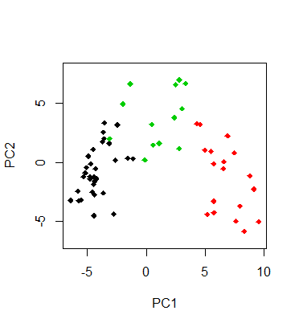
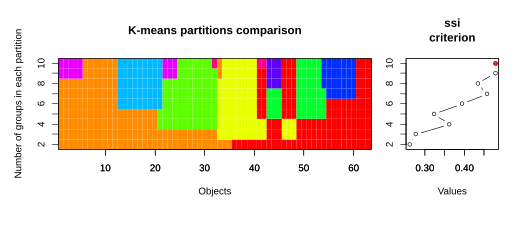
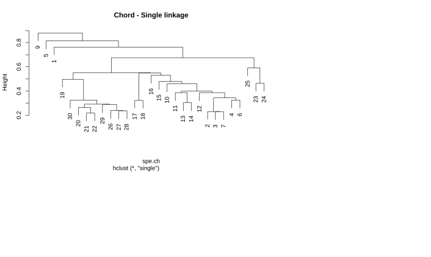
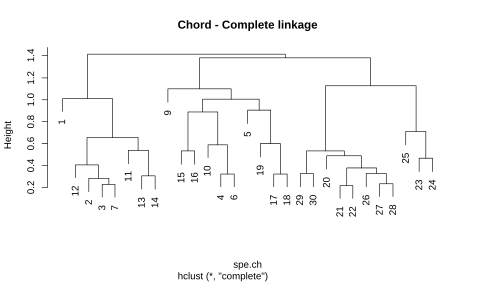
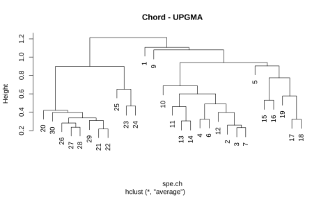
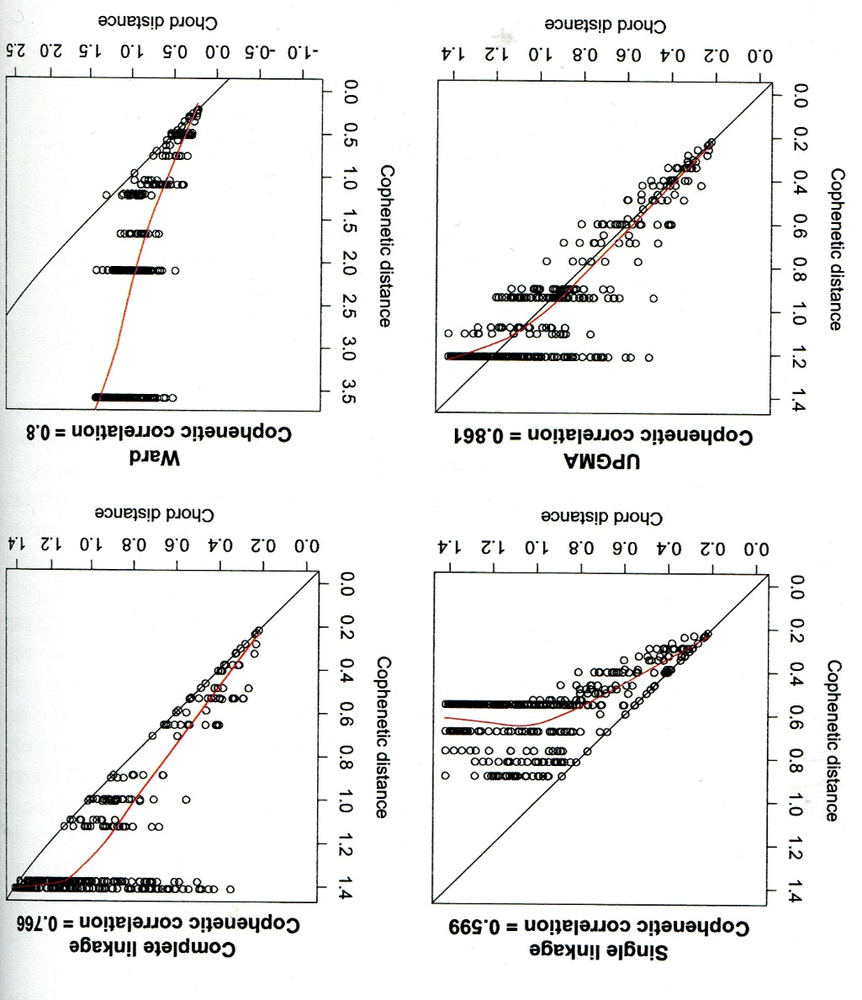
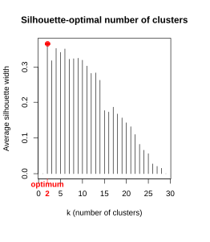
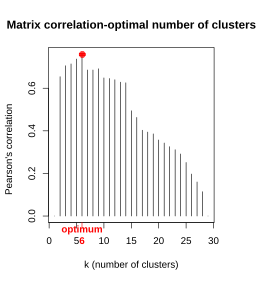
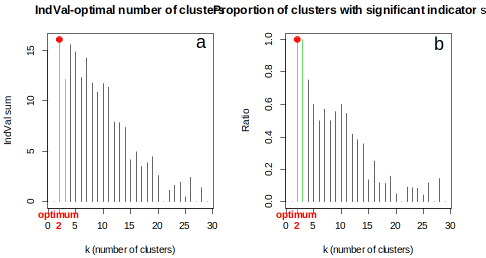
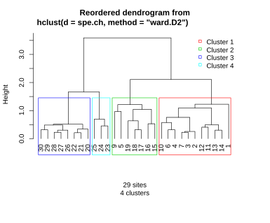

Statistik 8
Clusteranalysen und Rückblick
In Statistik 8 lernen die Studierenden Clusteranalysen/Klassifikationen als eine den Ordinationen komplementäre Technik der deskriptiven Statistik multivariater Datensätze kennen. Es gibt Partitionierungen (ohne Hierarchie), divisive und agglomerative Clusteranalysen (die jeweils eine Hierarchie produzieren). Etwas genauer gehen wir auf die k-means Clusteranalyse (eine Partitionierung) und eine Reihe von agglomerativen Clusterverfahren ein. Hierbei hat das gewählte Distanzmass und der Modus für die sukzessive Fusion von Clustern einen grossen Einfluss auf das Endergebnis. Wir besprechen ferner, wie man die Ergebnisse von Clusteranalysen adäquat visualisieren und mit anderen statistischen Prozeduren kombinieren kann.
Im Abschluss von Statistik 8 werden wir dann die an den acht Statistiktagen behandelten Verfahren noch einmal rückblickend betrachten und thematisieren, welches Verfahren wann gewählt werden sollte. Ebenfalls ist Platz, um den adäquaten Ablauf statistischer Analysen vom Einlesen der Daten bis zur Verschriftlichung der Ergebnisse, einschliesslich der verschiedenen zu treffenden Entscheidungen, zu thematisieren.
Lernziele
Clusteranalysen allgemein
Wie Ordinationen (Statistik 6 und 7) gehören Clusteranalysen zu den multivariat-deskriptiven Methoden. Wozu macht man dann Clusteranalysen?
Clusteranalysen sind komplementär zu Ordinationen: Bei Clusteranalysen liegt der Fokus auf den Unterschieden, während bei der Ordination der Fokus auf dem allmählichen Wandel entlang von Gradienten liegt. Insofern sind Ordinationen und Clusteranalysen Methoden, die für die gleichen Datensätze und z. T. ähnliche Fragestellungen angewendet werden können, aber mit Betonung unterschiedlicher Aspekte. Oftmals werden in einer Studie sogar beide Verfahren angewandt.
Prinzipiell geht es bei Clusteranalysen um das Herausarbeiten von Gruppen von Objekten mit ähnlichen Eigenschaften, z. B.:
- um diese zu beschreiben,
- um diese auf Unterschiede zu testen oder
- um deren Verbreitung in Karten darstellen zu können.
Es gibt drei grundlegende Typen von Clusteranalysen, jeweils mit mehreren Methoden:
- Partitionierung (ohne Hierarchie)
- Hierarchische Clusteranalyse
- divisiv (der Gesamtdatensatz wird sukzessive in immer feinere Gruppen aufgeteilt)
- agglomerativ (beginnend mit den Einzelbeobachtungen werden diese immer weiter zu Gruppen zusammengefasst)
Im Kurs behandeln wir nur die Partitionierung und verschiedene agglomerative Clusterferfahren. Ein divisives Clusterverfahren wäre z. B. TWINSPAN (Hill 1979; Roleček et al. 2009), welches in der Vegetationsökologie viel verwendet wird, m. W. nicht in R implementiert ist, dafür unter anderem im Freeware-Programm JUICE (Tichý 2002).
k-means clustering
Das k-means clustering ist die einfachste Clustermethode überhaupt. Ihre Kernaspekte lassen sich wie folgt beschreiben:
- Partitionierung (ohne Hierarchie) in vom Benutzer vorgegebene k Cluster.
- Verfahren versucht die Summe der quadratische Abweichungen vom den Clusterzentren (Zentroide) zu minimieren.
- In der Tendenz entstehen ± sphärische Cluster ähnlicher Grösse (sphärisch meint kugelförmig/isodiametrisch, aber eben nicht im dreidimensionalen, sondern im vieldimensionalen Variablenraum).
- Da das Ganze mit einem iterativen Optimierungsalgorithmus passiert, der mit zufällig gewählten Startpunkten beginnt, unterscheiden sich unterschiedliche Durchläufe im Ergebnis.
Die Durchführung des k-means clustering eines multivariaten Datensatzes geschieht mit dem Befehl kmeans aus Base R, hier angewandt auf unseren Moordatensatz, den wir schon von den Ordinationen kennen:
kmeans.2 <- kmeans(sveg, 3)Wie sehen unsere drei Cluster nun aus? Am besten plotten wir sie in das Ordinationsdiagramm, indem wir die Beobachtungen je nach Clusterzugehörigkeit einfärben:
plot(pca, type = "n")
points(pca, display = "sites", pch=19, col=kmeans.2[[1]])
Wie viele Cluster sollte man nun unterscheiden? Oftmals ergibt sich die Zahl (oder zumindest eine Grössenordnung) aus dem Zweck, für den man die Clusteranalyse macht. Es gibt auch unterschiedliche numerische Kriterien, um die “beste” Partitionierung zu finden (allerdings liefern verschieden Gütemasse unterschiedliche Ergebnisse).
Ein Gütemass ist SSI = Simple Structure Index. Der SSI kombiniert drei Aspekte von Cluster-Güte: (a) maximale Differenz aller Variablen zwischen den Clustern, (b) Grössen der einzelnen Clustern und (c) Abweichung der Variablenwerte in den Clusterzentren vom Gesamtmittel. Der SSI reicht von 0 bis 1 und eine Partitionierung ist umso besser, je höher der Wert ist.
Wenn wir mit einem kurzen R-Code (wird in der Demo gezeigt) für unseren Moordatensatz die Partitionen von k = 2 bis 10 ausrechnen und jeweils den SSI berechnen, ergibt sich das folgende Bild (siehe Abbildung 8.1):

Die farbige Visualisierung links zeigt, dass es eben keine hierarchische Clusteranalyse ist. Bei k > 2 bleibt die ursprüngliche Abgrenzung der zwei Hauptcluster nicht erhalten. Gemäss SSI wäre in diesem Fall die 10-Cluster-Lösung die beste (es sei aber empfohlen, solchen numerischen “Empfehlungen” nicht blindlings zu glauben).
Agglomerative Clusterverfahren
Einführung
Bei agglomerativen Clusterverfahren folgt der Algorithmus immer dem folgenden Ablauf:
- Sie fassen die beiden ähnlichsten Beobachtungen als initiales Cluster zusammen.
- Danach geht es mit dem Zusammenfassen des nächstähnlichen Paares von Einzelbeobachtungen bzw. Clustern so lange weiter, bis alle Cluster zu einem einzigen zusammengefasst sind.
Es gibt deswegen so viele verschiedene agglomerative Clusterverfahren, da man zwei wesentliche Parameter im Prinzip frei kombinieren kann, das verwendete Distanzmass und den Modus für das Zusammenfügen von Clustern:
An Distanzmassen sind die folgenden beiden die gängigsten:
- Euklidische (pythagoreische) Distanz: Länge der Gerade, die die beiden Punkte im multidimensionalen Hyperraum miteinander verbindet.
- Chord-Distanz: euklidische Distanz, nachdem alle Variablen auf Länge 1 standardisiert wurden.
Die vier gängigsten Modi für das Zusammenfassen von Clustern sind:
- Single linkage (nearest neighbour): Distanz zum nächsten Element eines Clusters wird genommen.
- Complete linkage (furthest neighbour): Distanz zum am weitesten entfernten Element eines Clusters wird genommen.
- Average linkage (4 verschiedene Methoden, darunter besonders gängig UPGMA = unweighted pair-group method using arithmetic averages): Distanz zum Cluster”zentrum” wird genommen.
- Ward’s mimimum variance clustering: Statt Distanzen zwischen Clustermitgliedern zu minimieren, wird hier die Clustervariabilität minimiert.
Schauen wir uns an, welchen Effekt die vier Verfahren kombiniert mit der Chord-Distanz auf die Fischgemeinschaftsdaten des Doubs-Datensatzes haben (siehe Abbildung 8.2):



Es zeigt sich, dass die Cluster doch sehr unterschiedlich aussehen können. Die terminalen Cluster sind oft identisch (ein Cluster aus den Probestellen 17 und 18 gibt es etwas bei allen vier Methoden), doch auf höherer Ebene gibt es gravierende Unterschiede. Diese äussern sich insbesondere in der Anfälligkeit gegenüber Kettenbildung (Chaining), was meint, dass eine Aufnahme allen anderen gegenübergesellt wird und in diesem grossen Cluster im nächsten Schritt wieder eine einzige einzige Aufnahme dem Rest herausgegriffen usw. Single linkage ist methodenbedingt besonders anfällig für Chaining (siehe links oben). Da für die meisten Anwendungen solche Ein- Aufnahmen-Cluster unpraktisch sind, wird single linkage kaum noch verwendet. Complete linkage und UPGMA neigen weniger zu Chaining und die Ward-Methode am wenigsten.
Güte von Clusterungen
Nun ist zwar Chaining unpraktisch, aber was, wenn es doch die realen Ähnlichkeitsbeziehungen am besten wiedergeben würde? Ein gutes Mass für die Güte eines Clusterergebnisses ist die Cophenetische Korrelation. Hier werden die Clusterpositionen in paarweise Distanzen zwischen Beobachtungen übersetzt und mit den ursprünglichen Distanzen verglichen (vergleichbar dem Stressplot im Falle einer NMDS-Ordination, vgl. Statistik 6). Schauen wir uns das Ergebnis für die vier Beispiele von oben an (siehe Abbildung 8.3):

Auch hier schneidet single linkage am schlechtesten ab. Wie meist, sind UPGMA und Ward am besten, wobei hier UPGMA sogar besser als Ward abschneidet.
Wie viele Cluster sollte man unterscheiden?
Wie schon bei der k-means-Partitionierung stellt sich auch beim hierarchischen Clustering die Frage nach der optimalen Zahl von unterschiedenen Clustern. Vielfach ergibt sich die Antwort darauf zumindest grössenordnungsmässig aus der geplanten Verwendung der Cluster. Es gibt auch verschiedene mathematische Gütemasse, u. a. Silhouette, Matrix-Korrelation und Indikatorarten (Abbildung 8.4):



Charakterisierung von Clustern
Wie schon bei k-means können wir die Cluster dadurch charakterisieren, dass wir die Clusterzugehörigkeit in ein einfaches oder Biplot-Ordinationsdiagramm plotten. Weitere Möglichkeiten der Beschreibung/Charakterisierung von Clustern sind u. a. (jeweils visualisiert für die 4-Cluster-Lösung des Doubs-Datensatzes):
- Einfärbung im Dendrogramm (Abbildung 8.5, den R-Code dazu gibt es im Demoskript):

- Geordnete Community-Tabelle (im Fall von von gemeinschaftsökologischen Daten), ggf. mit Hervorhebung der signifikant konzentrierten Arten:
32222222222 111111 1111
09876210543959876506473221341
Icme 5432121......................
Abbr 54332431.....1...............
Blbj 54542432.1...1...............
Anan 54432222.....111.............
Gyce 5555443212...11..............
Scer 522112221...21...............
Cyca 53421321.....1111............
Rham 55432333.....221.............
Legi 35432322.1...1111............
Alal 55555555352..322.............
Chna 12111322.1...211.............
Titi 53453444...1321111.21........
Ruru 55554555121455221..1.........
Albi 53111123.....2341............
Baba 35342544.....23322.........1.
Eslu 453423321...41111..12.1....1.
Gogo 5544355421..242122111......1.
Pefl 54211432....41321..12........
Pato 2211.222.....3344............
Sqce 3443242312152132232211..11.1.
Lele 332213221...52235321.1.......
Babl .1111112...32534554555534124.
Teso .1...........11254........23.
Phph .1....11...13334344454544455.
Cogo ..............1123......2123.
Satr .1..........2.123413455553553
Thth .1............11.2......2134.
sites species
29 27 - Vergleich der (Umwelt-)Variablen zwischen den Clustern mittels ANOVA.
Zusammenfassung
Weiterführende Literatur
- Borcard, D., Gillet, F. & Legendre, P. 2018. Numerical ecology with R. 2nd ed. Springer, Cham: 435 pp. [mit R]
- Crawley, M.J. 2013. The R book. 2nd ed. John Wiley & Sons, Chichester,UK: 1051 pp. [mit R]
- Everitt, B. & Hothorn, T. 2011. An introduction to applied multivariate analysis with R. Springer, New York: 273 pp. [mit R]
- Hill, M.O. 1979. TWINSPAN – A FORTRAN program for arranging multivariate data in an ordered two-way table by classification of the individuals and attributes. Cornell University, Ithaca, NY: 90 pp.
- Roleček, J., Tichý, L., Zelený, D. & Chytrý, M. 2009. Modified TWINSPAN classification in which the hierarchy represents cluster heterogeneity. Journal of Vegetation Science 20: 596–602.
- Tichý, L. 2002. JUICE, software for vegetation classification. Journal of Vegetation Science 13: 451–453.
- Wildi, O. 2017. Data analysis in vegetation ecology. 3rd ed. CABI, Wallingford, UK: 333 pp. [mit R]